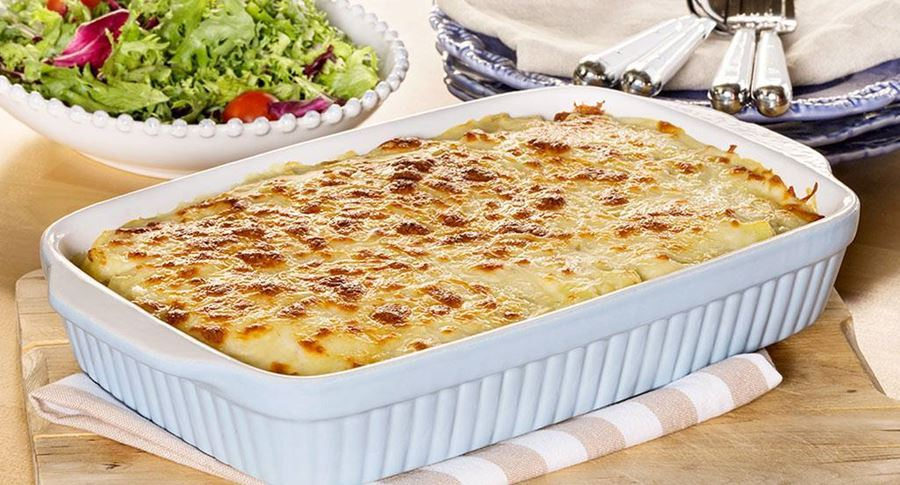

Bacalhau com natas

Description
Bacalhau directly translated means cod fish, however it refers to cod that's been dried and salted. It's extremely popular and directly translates to cod fish with cream.
Because bacalhau is dried and salted, it needs to be soaked before it is cooked. Smaller pieces may take around 4-6 hours but large pieces need to be soaked for much longer. This rehydrates the fish and removes lots of the salt content.
I personally love this and will always get mumsy to make me some.
Ingredients
- 400g bacalhau (cod fish)
- 400g peeled and diced potatoes
- Olive oil
- 2 diced medium onions
- 3 minced garlic cloves
- 1 bay leaf
- 1tbsp butter
- 1tbsp flour
- 300ml milk
- 200ml fresh cream
- Fresh parsley
- Nutmeg, salt and black pepper to taste
- 100g mozzarella cheese
- 50g parmesan cheese
Preparation
- Rinse and drain the soaked cod, place it in a medium pot and cover with hot water. Place over a medium heat and bring to the boil, allow it to simmer for 5 minutes.
- Drain the fish, saving 1 cup of the water.
- In another medium-size pot, combine the butter, flour and a drizzle of olive oil. Place over a low to medium heat and after the butter has melted, cook the mixture for around 2 minutes, constantly stirring.
- Add the milk and fish water, continue stirring until thickened to a bechamel-like consistency.
- Stir in the fresh cream, season it with nutmeg, salt and black pepper.
- Place a frying pan over medium heat, add a tbsp of olive oil, the onions and garlic. Fry until the onions are translucent, then add the fish and fry for another 5 minutes.
- Cover the bottom of the same frying pan with olive oil. Fry the potatoes in batches, till golden brown. Rest on some absorbent towels to drain any excessive oil.
- Preheat the oven to 200 degrees Celsius
- Combine the fish sauce, the potatoes, and the fish. Place on a baking dish ad sprinkle the cheese on top.
- Place the mixture in the oven and roast it for 20 minutes or until the cheese is golden brown.
- Serve sprinkled with some fresh parsley.
Return to Home page